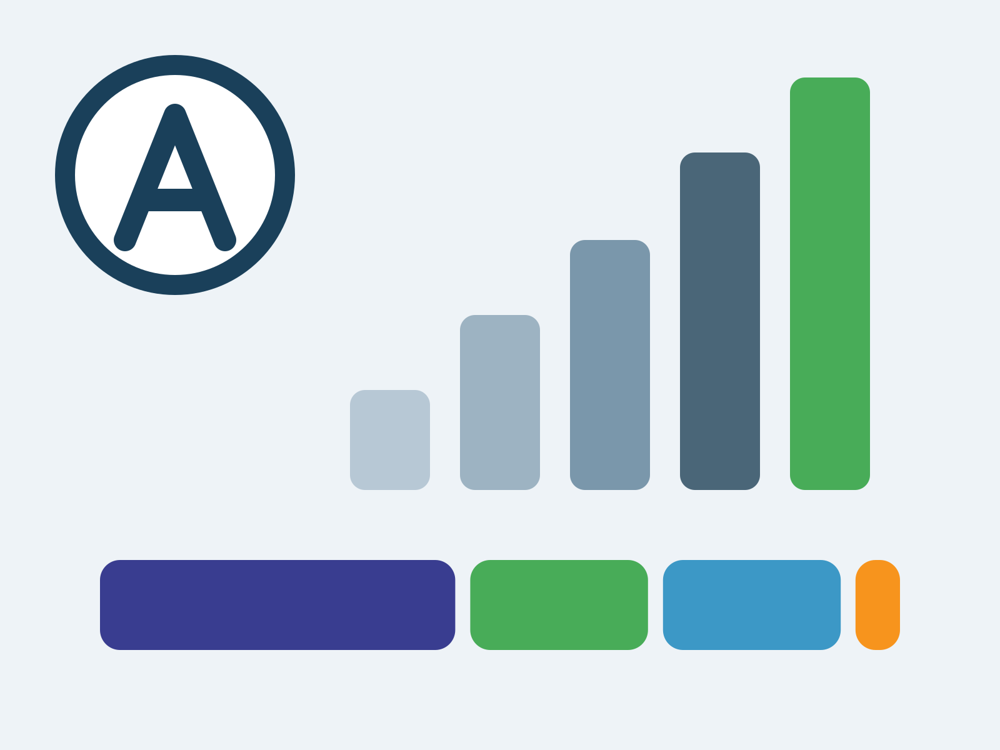
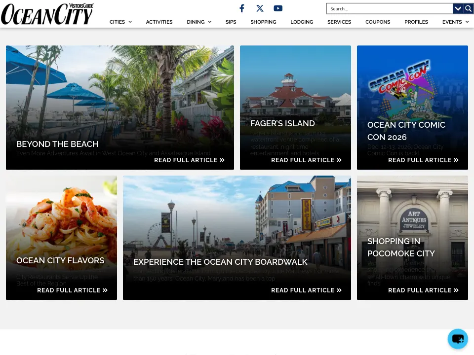
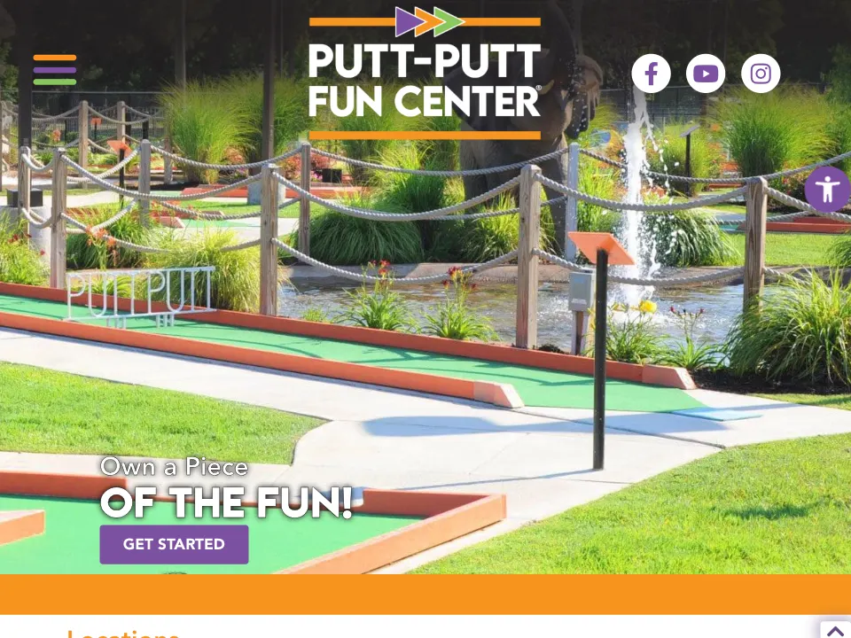
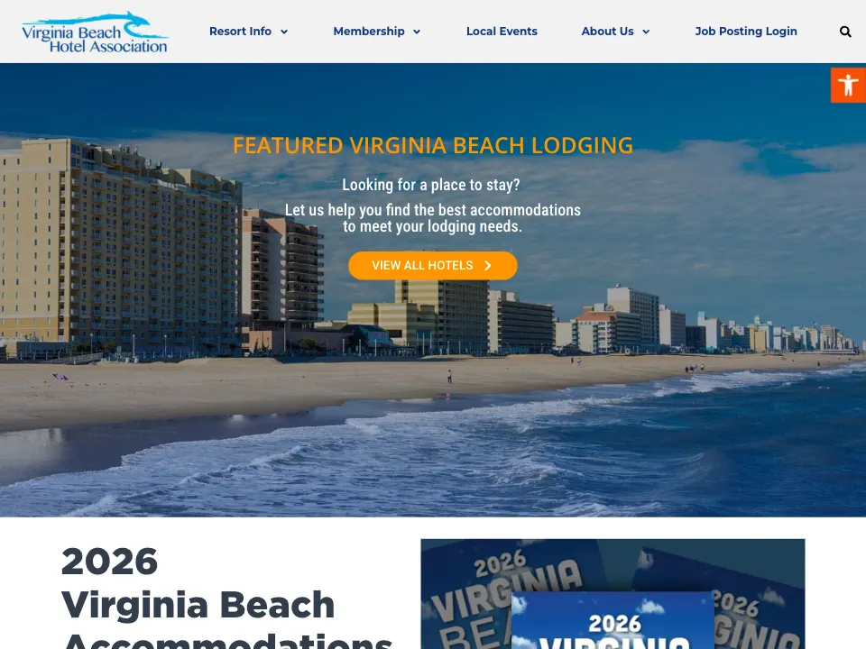

Case studies
Every project has a story. I always expect a plot twist.
Some projects started with a blank canvas. Others started with a website held together by outdated plugins, unknown historical decisions, and sheer determination.
-

Custom tool
Second Look
Second Look Site Check
A website audit tool I built to grade search, accessibility, speed and usability in plain language, so site owners know what to fix first.
-

Visitors’ guides
The Visitors’ Guides
Seven destinations. One very well-traveled developer.
Print guides that became websites, with business directories, advertising and hosting I look after.
-

Magazine
Coastal Virginia Magazine
Twenty-six years of stories. A whole new chapter.
Coastal Virginia Magazine was originally managed by TownNews. I helped move and build the site in WordPress. I then modernized and rebuilt the templates, issues, advertising, reporting, event sites, and the sister publication.
-

Event hub
Beach Events
Less searching. More celebrating.
An events site for Virginia Beach, rebuilt and redesigned to be more user-friendly and accessible, with a calendar at the center and ticket links built in.
-

Franchise network
Putt-Putt Fun Center
Two dozen locations. One network. Zero headaches.
One WordPress network. Every location runs its own content, and the brand stays consistent.
-

Association site
Virginia Beach Hotel Association
Easier to find. Easier to add to.
A reorganized site that’s easy to navigate, and a member dashboard where hotels log in to add their own jobs and events.